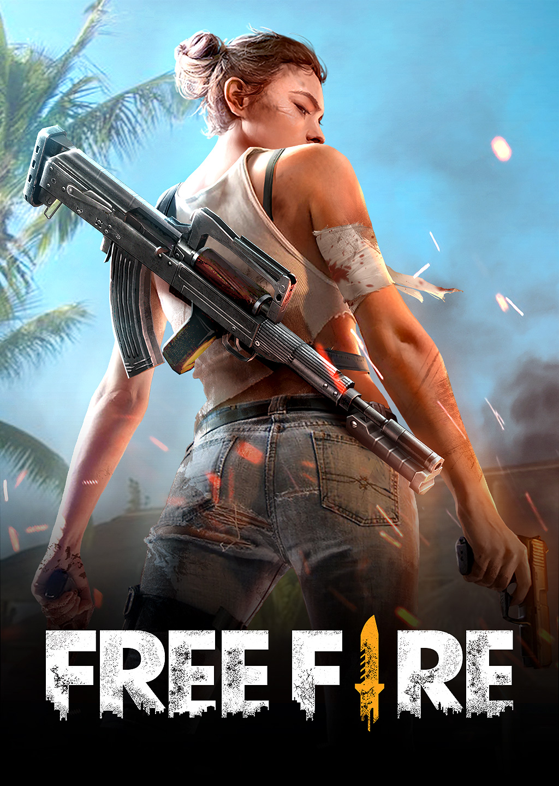

Sobre este trabalho
Uma ideia central do HTML, dita pelo professor:
Mesmo que a sua sintaxe esteja 100% correta, o seu código pode ser semanticamente pobre.
Prof. Israel Cunha
Trabalho feito para a prova do dia .
Um dos grandes nomes dos jogos Battle Royale para celulares.
O Free Fire foi lançado em 2017. Foi criado pela 111dots Studio e publicado pela Garena. É um jogo de battle royale para celular, em que até 50 jogadores disputam numa ilha.

Ele é gratuito e roda até em celulares de entrada, o que o tornou acessível para muita gente.
Uma ideia central do HTML, dita pelo professor:
Mesmo que a sua sintaxe esteja 100% correta, o seu código pode ser semanticamente pobre.
Prof. Israel Cunha
Trabalho feito para a prova do dia .